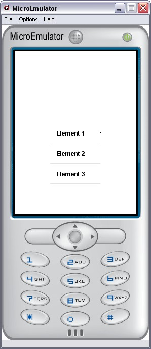

SimpleList prototype

Select an element in a list.
Maximum 5 elements , non scrollable list.
Data fields
- SFInt32 nbElements - Number of elements
- MFString elementsLabels - Elements labels
- MFInt32 elementsStates - Enable/disable elements. Enable>=0; disable=-1
- MFInt32 elementsSeparators - Elements separators. 0 = separator; -1 = no separator
Style fields
- MFString focusbarStyle - Path to the CSS specific node associated to the FocusBar of SimpleList proto
- MFString style - Path to the CSS node associated to SimpleList proto
- SFVec2f size - Size of the area where the SimpleList proto is displayed
- SFVec2f textScale - Use for scaling text if necessary (phone with small fonts)1
- MFString focusbarImages - FocusBar background and reflect
- MFString images - Image separator
Warning:
Define style is required (we can use the default style - see
Style node).
Exposed Fields
- SFBool enable - Enable/disable SimpleList focus
- SFBool enableCycle
Event in
- SFInt32 update - Update the list and position focus on the given element
- Call update is needed if Styles fields are modified
- SFInt32 goToElement - Force list to focus a given element
Event Out
- SFInt32 currentElement - The selected element
- SFTime selection - The time when an item is selected
List,
FocusBar